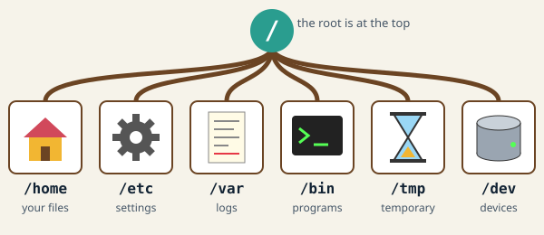
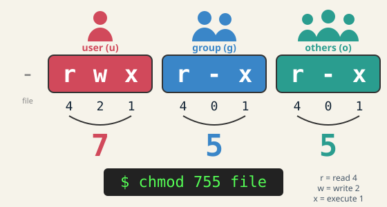

Linux exam – 1st year
1 / 11Tēma9 daļas
Linux exam – 1st year
Revision map for a first-year Linux exam. Rule of thumb: when stuck, man command or command --help. Practise every command in a terminal – typing it once beats reading it five times.
Šajā tēmā
- 1Filesystem hierarchy
- 2Files and navigation
- 3Text tools
- 4Pipes and redirection
- 5Permissions and users
- 6Processes
- 7Shell scripting (bash)
- 8System and network
- 9Exam checklist
Velc vai spied →1 / 11
1Linux exam – 1st year
Filesystem hierarchy
Everything is a file, and everything hangs from one root /. Mnemonic: etc = Editable Text Configuration, var = variable data, tmp = gone after reboot.

/ – root of everything
/home – users' personal files (~)
/etc – system configuration
/var – logs and changing data (/var/log)
/bin, /usr/bin – programs
/tmp – temporary files
/dev – devices as files
/proc – kernel and process info
absolute (/etc/hosts) vs relative (../docs) paths
Linux exam – 1st year2 / 11
2Linux exam – 1st year
Files and navigation
pwd, cd, ls -la
mkdir -p, touch
cp -r, mv, rm -r
find . -name "*.txt"
ln (hard link) vs ln -s (symbolic link)
wildcards: * ? [abc]
tar -czf / tar -xzf – archive and extract
Linux exam – 1st year3 / 11
3Linux exam – 1st year
Text tools
cat, less, head -n, tail -f
grep -i -r -v – search lines
wc -l – count lines
sort, uniq -c
cut -d: -f1 – pick columns
sed 's/old/new/g' – replace
awk '{print $1}' – fields
nano / vim (i, Esc, :wq, :q!)
Linux exam – 1st year4 / 11
4Linux exam – 1st year
Pipes and redirection
Classic exam pipeline: cut -d: -f7 /etc/passwd | sort | uniq -c | sort -nr – which shells are used, most common first.
cmd1 | cmd2 – output becomes input
> overwrite, >> append
< read input from file
2> errors, 2>&1 errors with output
/dev/null – discard output
streams: stdin 0, stdout 1, stderr 2
Linux exam – 1st year5 / 11
5Linux exam – 1st year
Permissions and users
Read ls -l as type + three triples: -rwxr-xr-x = file, user rwx (7), group r-x (5), others r-x (5) → 755.

r=4, w=2, x=1 for user / group / others
chmod 755 file, chmod u+x file
chown user:group file
on directories: x = enter, w = create/delete inside
umask 022 → files 644, dirs 755
sudo, su, root (UID 0)
whoami, id, groups, passwd
/etc/passwd, /etc/shadow, /etc/group
Linux exam – 1st year6 / 11
6Linux exam – 1st year
Processes
ps aux, top / htop
PID, PPID – every process has a parent
kill PID (SIGTERM 15), kill -9 (SIGKILL)
cmd &, jobs, fg, bg, Ctrl+C, Ctrl+Z
systemctl start / stop / status / enable
exit code: echo $? (0 = success)
Linux exam – 1st year7 / 11
7Linux exam – 1st year
Shell scripting (bash)
Most common mistakes: spaces around = in assignments, missing spaces inside [ ], and unquoted variables.
#!/bin/bash + chmod +x script.sh
variables: name=value (no spaces), "$name"
arguments: $1 $2 $# $@ $0
if [ -f file ]; then … fi
for f in *.txt; do … done
while read line; do … done < file
$(command) – command substitution
tests: -eq -ne -lt -gt, = !=, -d -f -z
quotes: "expands $var" vs 'literal'
Linux exam – 1st year8 / 11
8Linux exam – 1st year
System and network
apt update, apt install (dnf on Fedora/RHEL)
df -h (disk free), du -sh (folder size)
free -h, uname -a, uptime
ip a, ping, ss -tuln
ssh user@host, scp file user@host:path
env, export VAR=value, $PATH
crontab -e: min hour day month weekday
Linux exam – 1st year9 / 11
9Linux exam – 1st year
Exam checklist
convert rwxr-x--- to octal and back
write a pipeline: count unique values in a column
explain what each top-level directory holds
write a script with an argument, a loop and an if
hard link vs symbolic link difference
find and stop a running process
Linux exam – 1st year10 / 11